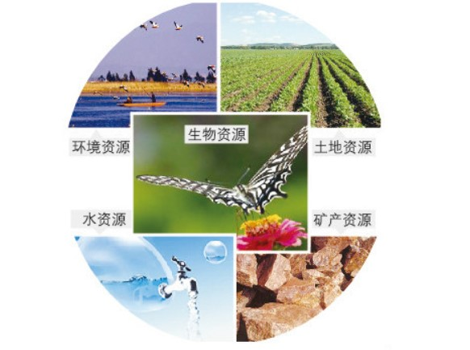

|
|
||
资源不是永不枯竭的，资源是会用绝的，不保护它就会用光永不再生。我们也将走上灭绝的道路。因此 节约自然资源要靠政府，更要靠每一个人的自觉行动。我们要积极参与，尽己所能，节约每一滴水，一度电，一张 纸等等。有些同学可能不以为然，认为现在生活水平提高了，谈节约过时了。其实，建设节约型社会，是世 界各国可持续发展的共同方向。当今世界发达国家国民的节约意识都很强。人人都该尽自己保护的责任。保 护自然资源就是保护我们自己，自然资源的危机在向我们走来。 |
||
分类 可再生资源：在较短时间内可以再生，或是可以循环使用的资源，如水资源、生物资源、土地资源 非可再生资源：指那些在人类历史时期，用完了就不能再生产的资源。如矿产资源 短缺的原因 1、由于人口的增加，人们对自然资源的获取获取速度超过了自然资源的补给、再生和增殖速度（根本原因） 2、自然资源具有数量有限的特点 3、资源的浪费损失严重：如：城市缺水、农民耕地紧张、某些矿产资源满足不了国民经济发展的需要，它们与人口增长和经济发展之间的矛盾日益突出 与人类的关系 1、资源是人类安身立命的基本条件。 2、人类对自然资源的无节制的利用，会出现资源的短缺或耗竭。 |
 |